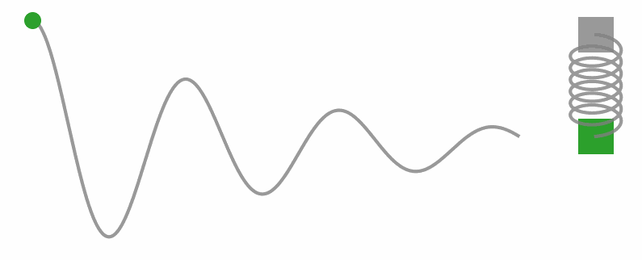
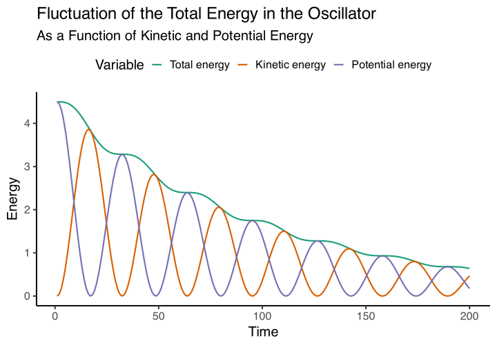
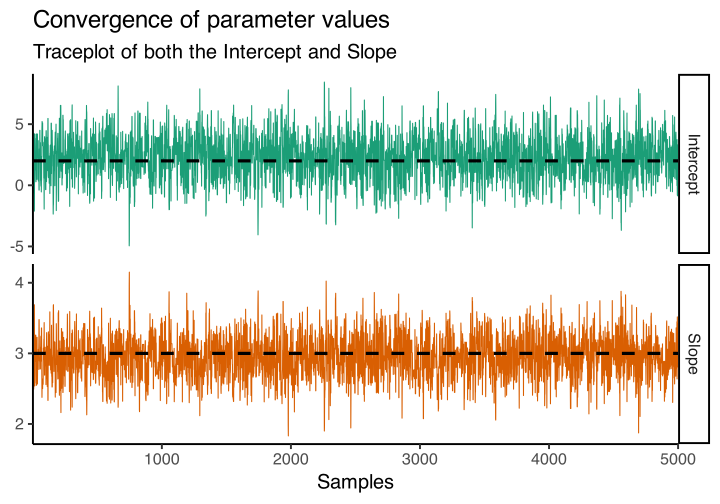
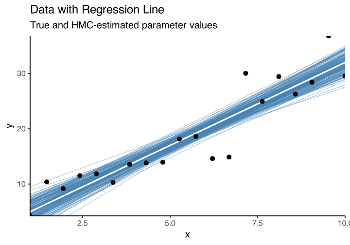

![]()
# Define the potential energy function (U) and its derivative (dU/dq)
U <- function(q) {
k <- 1 # Spring constant
return(0.5 * k * q^2)
}
dU_dq <- function(q) {
k <- 1 # Spring constant
return(k * q)
}
# Kinetic energy (K) used for later
K <- function(p, m) {
return(p^2 / (2 * m))
}
# Introduce a damping coefficient
b <- 0.1 # Damping coefficient
# Set up initial conditions
q <- -3.0 # Initial position
p <- 0.0 # Initial momentum
m <- 1.0 # Mass
# Time parameters
t_max <- 20
dt <- 0.1
num_steps <- ceiling(t_max / dt) # Ensure num_steps is an integer
# Initialize arrays to store position and momentum values over time
q_values <- numeric(num_steps)
p_values <- numeric(num_steps)
# Perform time integration using the leapfrog method
for (i in 1:num_steps) {
# Store the current values
q_values[i] <- q
p_values[i] <- p
# Half step update for momentum with damping
p_half_step <- p - 0.5 * dt * (dU_dq(q) + b * p / m)
# Full step update for position using the momentum from the half step
q <- q + dt * (p_half_step / m)
# Another half step update for momentum with damping using the new position
p <- p_half_step - 0.5 * dt * (dU_dq(q) + b * p_half_step / m)
}Introduction
Hey there, fellow science enthusiasts and stats geeks! Welcome back to the wild world of Markov Chain Monte Carlo (MCMC) algorithms. This is part two of my series on the powerhouse behind Bayesian Inference. If you missed the first post, no worries! Just hop on over here and catch up before we dive deeper into the MCMC madness. Today, we’re exploring the notorious Hamiltonian Monte Carlo (HMC), a special kind of MCMC algorithm that taps into the dynamics of Hamiltonian mechanics.
Stats Meets Physics?
Hold up, did you say Hamiltonian mechanics? What in the world do mechanics and physics have to do with Bayesian stats? I get it, it sounds like a mashup of your wildest nightmares. But trust me, this algorithm sometimes feels like running a physics simulation in a statistical playground. Remember our chat from the last post? In Bayesian stats, we’re all about estimating the shape of a parameter space, aka the posterior distribution.
A Particle Rolling Through Stats Land
Picture this: You drop a tiny particle down a cliff, and it rolls naturally along the landscape’s curves and slopes. Easy, right? Now, swap out the real-world terrain for a funky high-dimensional probability function. That same little particle? It’s cruising through this wild statistical landscape like a boss, all thanks to the rules of Hamiltonian mechanics.
About the animation
The previous animation illustrate the Hamiltonian dynamics of a particle traveling a two-dimensional parameter space. The code for this animation is borrowed from Chi Feng’s github. You can find the original repository with corresponding code here: https://github.com/chi-feng/mcmc-demo
Hamiltonian Mechanics: A Child’s Play?
Let’s break down Hamiltonian dynamics in terms of position and momentum with a fun scenario: Imagine you’re on a swing. When you hit the highest point, you slow down, right? Your momentum’s almost zero. But here’s the kicker: You know you’re about to pick up speed on the way down, gaining momentum in the opposite direction. That moment when you’re at the top, almost motionless? That’s when you’re losing kinetic energy and gaining potential energy, thanks to gravity getting ready to pull you back down.

So, in this analogy, when your kinetic energy (think swing momentum) goes up, your potential energy (like being at the bottom of the swing) goes down. And vice versa! When your kinetic energy drops (like when you’re climbing back up), your potential energy shoots up, waiting for gravity to do its thing.
This energy dance is captured by the Hamiltonian (\(H(q, p)\)), which sums up the total energy in the system. It’s the sum of kinetic energy (\(K(p)\)) and potential energy (\(U(q)\)):
\[ H(q, p) = K(p) + U(q) \]
At its core, Hamiltonian Monte Carlo (HMC) borrows from Hamiltonian dynamics, a fancy term for the rules that govern how physical systems evolve in phase space. In Hamiltonian mechanics, a system’s all about its position (\(q\)) and momentum (\(p\)), and their dance is choreographed by Hamilton’s equations. Brace yourself, things are about to get a little mathy:
\[ \begin{align} \frac{{dq}}{{dt}} &= \frac{{\partial H}}{{\partial p}} \\ \frac{{dp}}{{dt}} &= -\frac{{\partial H}}{{\partial q}} \end{align} \]
Wrapping Our Heads Around the Math
Okay, I know Hamiltonian dynamics can be a real brain-buster, trust me, it took me a hot minute to wrap my head around it. But hey, I’ve got an analogy that might just make it click. Let’s revisit our swing scenario: remember our picture of a kid on a swing, right? The swing’s angle from the vertical (\(q\)) tells us where the kid is, and momentum (\(p\)) is how fast the swing’s moving.
Now, let’s break down those equations:
\[ \frac{{dq}}{{dt}} = \frac{{\partial H}}{{\partial p}} \]
This one’s like peeking into the future to see how the angle (\(q\)) changes over time. And guess what? It’s all about momentum (\(p\)). The faster the swing’s going, the quicker it swings back and forth, simple as that!
Next up:
\[ \frac{{dp}}{{dt}} = -\frac{{\partial H}}{{\partial q}} \]
Now, this beauty tells us how momentum (\(p\)) changes over time. It’s all about the energy game here, specifically, how the swing’s position (\(q\)) affects its momentum. When the swing’s at the highest point, gravity’s pulling hardest, ready to send him back down.
So, picture this:
- The kid swings forward, so the angle (\(q\)) goes up thanks to the momentum (\(p\)) building until bam, top of the swing.
- At the top, the swing’s momentarily still, but gravity’s pulling to send him flying back down, hence, he is accumulating potential energy.
- Zoom! Back down it goes, picking up speed in the opposite direction, and so, the potential energy is then transferred into kinetic energy.
All the while, the Hamiltonian (\(H\)) is keeping tabs on the swing’s total energy, whether it’s zooming at the bottom (high kinetic energy \(K(p)\), as a function of momentum \(p\)) or pausing at the top (high potential energy \(U(q)\), as a function of position \(q\)).
This dance between kinetic and potential energy is what we care within Hamiltonian mechanics, and also what we mean when we refer to the phase space, which it’s nothing more than the relationship between position and momentum.
Visualizing Hamilton’s Equations
Okay, I know we’re diving into some physics territory here in a stats blog, but trust me, understanding these concepts is key to unlocking what HMC’s all about. So, let’s take a little side trip and get a feel for Hamilton’s equations with a different example. Check out the gif below, see that weight on a string? It’s doing this cool back-and-forth dance thanks to the tug-of-war between the string pulling up and gravity pulling down.

Now, let’s get a little hands-on with some code. We’re gonna simulate a simple harmonic oscillator (you know, like that weight on a string) and watch how it moves through phase space.
Code
harmonic_data <- data.table(`Position (q)` = q_values, `Momentum (p)` = p_values)
ggplot(harmonic_data, aes(`Position (q)`, `Momentum (p)`)) +
geom_path(linewidth = .7) +
geom_point(size = 2) +
geom_point(data = harmonic_data[1,], col = "red", size = 3) +
labs(title = "Phase Space Trajectory of Hamiltonian Dynamics",
subtitle = "Accounting for Energy Loss") +
theme_classic(base_size = 20)Now, take a look at that graphic. See how the position (\(q\)) is all about where the oscillator’s hanging out, and momentum (\(p\))? Well, that’s just how fast the weight’s swinging. Put them together, and you’ve got what we call the phase space. Basically, it’s like peeking into the dance floor of these mechanical systems through the lenses of Hamiltonian dynamics.
Now, in a perfect world, there’d be no energy lost over time. But hey, we like to keep it real, so we added a little something called damping effect (think of it like energy leaking out of the system over time). In the real world, that makes sense, but in our statistical playground, we want to keep that energy locked in tight. After all, losing energy means we’re losing precious info about our target distribution, and nobody wants that.
Code
hamiltonian <- harmonic_data[, list(`Total energy` = U(`Position (q)`) + K(`Momentum (p)`, m),
`Kinetic energy` = K(`Momentum (p)`, m),
`Potential energy` = U(`Position (q)`))]
hamiltonian <- melt(hamiltonian, measure.vars = c("Total energy", "Kinetic energy", "Potential energy"))
ggplot(hamiltonian, aes(rep(1:200, times = 3), value, col = variable)) +
geom_line(linewidth = 1) +
labs(y = "Energy", col = "Variable", x = "Time",
title = "Fluctuation of the Total Energy in the Oscillator",
subtitle = "As a Function of Kinetic and Potential Energy") +
scale_color_brewer(type = "qual", palette = 2) +
theme_classic(base_size = 20) +
theme(legend.position = "top")
So, what’s the big takeaway here? Well, whether it’s a ball rolling down a hill or a sampler hunting for model coefficients, this framework’s got us covered. In Bayesian land, think of our model’s parameters as position coordinates \(q\) in some space, and \(p\) is the momentum helping us navigate the twists and turns of this parameter space. And with Hamiltonian dynamics leading the way, we’re guaranteed to find our path through this statistical dimension, one step at a time.
Building our own Hamiltonian Monte Carlo
Now that we got some intuition about Hamiltonian mechanics, it’s time we build our own HMC sampler. To accomplish this, imagine that we’re diving into some data to figure out how an independent variable (\(x\)) and a dependent variable (\(y\)) are related. We’re talking about linear regression (you know, trying to draw a line through those scattered data points to make sense of it all). But hey, this is Bayesian territory, so we’re not just throwing any ol’ line on that plot. No, sir! We’re exploring the parameter space of those regression coefficients (that’s the slope and intercept). Then, when the data rolls in, we’re smashing together that likelihood and those priors using Bayes’ theorem to cook up a posterior distribution (a fancy way of saying our updated beliefs about those coefficients after we’ve seen the data).
Cooking Up Some Data
But before we dive into the statistical kitchen, let’s whip up some synthetic data. Picture this: we’re mimicking a real-world scenario where relationships between variables are as murky as a foggy morning. So, we’re gonna conjure up a batch of data with a simple linear relationship, jazzed up with a sprinkle of noise. Oh, and let’s keep it small (just 20 subjects), ’cause, hey, science “loves” a manageable sample size.
set.seed(80) # Set seed for reproducibility
# Define the number of data points and the range of independent variable 'x'
n <- 20
x <- seq(1, 10, length.out = n)Okay, so now let’s get down to business and fit ourselves a nice, cozy linear relationship between an independent variable (\(x\)) and a dependent variable (\(y\)). We’re talking about laying down a straight line that best describes how \(y\) changes with \(x\).
So, what’s our equation look like? Well, it’s pretty simple:
\[ \begin{aligned} y_i &\sim \mathcal{N}(\mu_i, \sigma^2) \\ \mu_i &= \beta_0 + \beta_1 \cdot x_i \\ \end{aligned} \]
Hold on, let’s break it down. We’re saying that each \(y\) value (\(y_i\)) is chillin’ around a mean (\(\mu_i\)), like a bunch of friends at a party. And guess what? They’re all acting like good ol’ normal folks, hanging out with a variance (\(\sigma^2\)) that tells us how spread out they are. Now, the cool part is how we define \(\mu_i\). It’s just a simple sum of an intercept (\(\beta_0\)) and the slope (\(\beta_1\)) times \(x_i\). Think of it like plotting points on graph paper, each \(x_i\) tells us where we are on the \(x\)-axis, and multiplying by \(\beta_1\) gives us the corresponding height on the line.
Now, let’s talk numbers. We’re setting \(\beta_0\) to 2 because, hey, every relationship needs a starting point, right? And for \(\beta_1\), we’re going with 3 (that’s the rate of change we’re expecting for every unit increase in \(x\). Oh, and let’s not forget about \(\sigma\)), that’s just a fancy way of saying how much our \(y\) values are allowed to wiggle around.
# Define the true parameters of the linear model and the noise level
true_intercept <- 2
true_slope <- 3
sigma <- 5With our model all set up, it’s time to create some data points for our \(y\) variable. We’ll do this using the rnorm() function, which is like a magical data generator for normally distributed variables.
# Generate the dependent variable 'y' with noise
mu_i = true_intercept + true_slope * x
y <- rnorm(n, mu_i, sigma)Choosing a Target Distribution
Alright, now that we’ve got our hands on some data, it’s time to dive into the nitty-gritty of Bayesian stuff. First up, we’re gonna need our trusty log likelihood function for our linear model. This function’s like the Sherlock Holmes of statistics, it figures out the probability of seeing our data given a specific set of parameters (you know, the intercept and slope we’re trying to estimate).
# Define the log likelihood function for linear regression
log_likelihood <- function(intercept, slope, x, y, sigma) {
# We estimate the predicted response
y_pred <- intercept + slope * x
# Then we see how far from the observed value we are
residuals <- y - y_pred
# Then we estimate the likelihood associated with that error from a distribution
# with no error (mean = 0)
# (this is the function that we are trying to maximize)
log_likelihood <- sum( dnorm(residuals, mean = 0, sd = sigma, log = TRUE) )
return(log_likelihood)
}So, what’s the deal with priors? Well, think of them as the background music to our data party. They’re like our initial hunches about what the parameters could be before we’ve even glanced at the data. To keep things simple, we’ll go with flat priors (no favoritism towards any particular values). It’s like saying, “Hey, let’s give everyone a fair shot!”
# Define the log prior function for the parameters
log_prior <- function(intercept, slope) {
# Assuming flat priors for simplicity
# (the log of 0 is 1, so it has no effect)
return(0)
}Now, here’s where the real magic kicks in. We bring our likelihood and priors together in a beautiful dance to reveal the superstar of Bayesian statistics: the posterior distribution! This bad boy tells us everything we wanna know after we’ve taken the data into account. This allow us to take into account previous knowledge (like past research, and the observed data) let’s say, samples from a new experiment.
The posterior it’s nothing more than the probability associated with our parameters of interest (aka. the slope and intercept), given the observed data. We represent this posterior distribution as the following:
\[ P(\text{X}|\text{Data}) \propto P(\text{Data}|\text{X}) \times P(\text{X}) \]
Which is the same as saying:
\[ \text{Posterior} \propto \text{Likelihood} \times \text{Prior} \]
# Combine log likelihood and log prior to get log posterior
log_posterior <- function(intercept, slope, x, y, sigma) {
return(log_likelihood(intercept, slope, x, y, sigma) + log_prior(intercept, slope))
}Building the HMC sampler
Alright, now that we have everything ready, let’s dig into the guts of HMC and how we put it to work. Remember how HMC takes inspiration from the momentum and potential energy dance in physics? Well, in practice, it’s like having a GPS for our parameter space, guiding us to new spots that are more likely than others.
But here’s the thing: our parameter space isn’t some smooth highway we can cruise along endlessly. Nope, it’s more like a rugged terrain full of twists and turns. So, how do we navigate this space? Enter the leapfrog integration method, the backbone of HMC.
Leapfrog Integration
So, leapfrog integration is basically this cool math trick we use in HMC to play out how a system moves over time using discrete steps, so we don’t have to compute every single value along the way. This integration method also is advantageous by not allowing energy leaks out of the system (remember the Hamiltonian?) which is super important if you don’t want to get stuck in this statistical dimension mid exploration.
Here’s how it works in HMC-lingo: we use leapfrog integration to move around the parameter space in discrete steps (rather than sliding through a continuum), and grabbing samples from the posterior distribution. The whole process goes like this:
- We give the momentum \(p\) a little nudge by leveraging on the gradient info (\(\nabla\)). The gradient or slope of the position (\(\nabla U(q)\)) in this parameter space will determine by how much our momentum will change. Like when we are in the top position in the swing, the potential energy then transfers to kinetic energy (aka. momentum).
- We adjust the position (or parameters) based on the momentum boost.
- Then we update the momentum based on the gradient on that new position.
- We repeat the cycle for as many “jumps” we are doing, for each sample of the posterior we intend to draw.
Picture a frog hopping from one lily pad to another, that’s where the name “leapfrog” comes from. It helps us explore new spots in the parameter space by discretizing the motion of this imaginary particle by using Hamiltonian dynamics, using the slope information (\(\nabla U(q)\)) of the current position \(q\) to gain/loss momentum \(p\) and move to another position \(q\) in the parameter space.
We prefer leapfrogging over simpler methods like Euler’s method because it keeps errors low, both locally and globally. This stability is key, especially when we’re dealing with big, complicated systems. Plus, it’s a champ at handling high-dimensional spaces, where keeping energy in check is a must for the algorithm to converge.
Tuning Those Hamiltonian Gears
Now, to get our HMC sampler purring like a kitten, we’ve got to fine-tune a few gears. Think of these as the knobs and dials on your favorite sound system – adjust them just right, and you’ll be grooving to the perfect beat.
First up, we’ve got the number of samples. This determines how many times our sampler will take a peek at the parameter space before calling it a day.
Next, we’ve got the step size (\(\epsilon\)). Imagine this as the stride length for our leapfrog integrator. Too short, and we’ll be tiptoeing; too long, and we’ll be taking giant leaps – neither of which gets us where we want to go. It’s all about finding that sweet spot.
Then, there’s the number of steps for the leapfrog to make. Too few, and we risk missing key spots; too many, and we might tire ourselves out.
Lastly, we need an initial guess for the intercept and slope. This is like dropping a pin on a map – it gives our sampler a starting point to begin its journey through the parameter space.
# Initialization of the sampler
num_samples <- 5000 # Number of samples
epsilon <- 0.05 # Leapfrog step size
num_steps <- 50 # Number of leapfrog steps
init_intercept <- 0 # Initial guess for intercept
init_slope <- 0 # Initial guess for slope
# Placeholder for storing samples
params_samples <- matrix(NA, nrow = num_samples, ncol = 2)Starting the Sampler
Alright, let’s fire up this Hamiltonian engine and get this party started. Here’s the game plan:
- Create a Loop: We’ll set up a loop to simulate our little particle moving around the parameter space.
- Integrate Its Motion: Using our trusty leapfrog integrator, we’ll keep track of how our particle moves.
- Grab a Sample: Once our particle has finished its dance, we’ll grab a sample at its final position.
- Accept or Reject: We’ll play a little game of accept or reject – if the new position looks promising, we’ll keep it; if not, we’ll stick with the old one. It’s like Tinder for parameters.
- Repeat: We’ll rinse and repeat this process until we’ve collected as many samples as we need.
Now, to kick things off, we’ll give our imaginary particle a random speed and direction to start with, and drop it down somewhere in the parameter space. This initial kick sets the stage for our parameter exploration, the rest is up to the physics.
for (i in 1:num_samples) {
# Start with a random momentum of the particle
momentum_current <- rnorm(2)
# And set the initial position of the particle
params_proposed <-c(init_intercept, init_slope)
# Next, we will simulate the particle's motion using
# leapfrog integration.
...Simulating the Particle’s Motion
Now that our imaginary particle is all geared up with an initial momentum and position, it’s time to let it loose and see where it goes in this parameter playground. We know we’re using Hamiltonian mechanics, but to make it computationally feasible, we’re bringing in our trusty leapfrog integrator. We’ve already seen that this bad boy discretizes the motion of our particle, making it manageable to track its journey without breaking our computers.
So, here’s the lowdown on what our leapfrog integrator is up to:
- Estimating the Slope: We start off with an initial position and estimate the slope of the terrain at that point.
\[ \nabla U(q) = \frac{\partial U}{\partial q} \]
- Adjusting Momentum: This slope is like the potential energy, dictating whether our particle speeds up or slows down. So, we tweak the momentum accordingly based on this slope.
\[ p \leftarrow p - \frac{\epsilon}{2} \cdot \nabla U(q) \]
- Taking a Step: With this momentum tweak, we move the particle for a set distance \(\epsilon\), updating its position from the starting point.
\[ q \leftarrow q - \epsilon \cdot p \]
- Repeat: Now that our particle has a new spot, we rinse and repeat – estimating the slope and adjusting momentum.
\[ p \leftarrow p - \frac{\epsilon}{2} \cdot \nabla U(q) \]
- Keep Going: We keep this cycle going for as many steps as we want to simulate, tracking our particle’s journey through the parameter space.
for (j in 1:num_steps) {
# Gradient estimation
grad <- c(
# Gradient of the intercept of X: -sum(residuals / variance)
...
# Gradient of the slope of X: -sum(residuals * X / variance)
...
)
# Momentum half update
momentum_current <- momentum_current - epsilon * grad * 0.5
# Full step update for parameters
params_proposed <- params_proposed + epsilon * momentum_current
# Recalculate gradient for another half step update for momentum
grad <- c(
# Gradient of the intercept of X: -sum(residuals / variance)
...
# Gradient of the slope of X: -sum(residuals * X / variance)
...
)
# Final half momentum update
momentum_current <- momentum_current - epsilon * grad * 0.5
}Sample Evaluation and Acceptance
After our particle has taken its fair share of steps through the parameter space, it’s decision time – should we accept or reject its proposed new position? We can’t just blindly accept every move it makes; we’ve got to be smart about it.
That’s where the Metropolis acceptance criteria come into play. This handy rule determines whether a proposed new position is a good fit or not. The idea is to weigh the probability of the new position against the probability of the current one. If the new spot looks promising, we’ll move there with a certain probability, ensuring that our samples accurately reflect the shape of the distribution we’re exploring. But if it’s not a better fit, we’ll stick with where we are.
The formula for this acceptance probability (\(A(q', q)\)) when transitioning from the current position (\(q\)) to a proposed position (\(q'\)) is straightforward:
\[ A(q',q) = min(1,\frac{p(q')}{p(q)}) \]
Here, \(p(q')\) is the probability density of the proposed position \(q'\), and \(p(q)\) is the probability density of the current position \(q\). We’re essentially comparing the fitness of the proposed spot against where we’re currently at. If the proposed position offers a higher probability density, we’re more likely to accept it. This ensures that our samples accurately represent the target distribution.
However, when dealing with very small probability values, we might run into numerical underflow issues. That’s where using the log posterior probabilities comes in handy. By taking the logarithm of the probabilities, we convert the ratio into a difference, making it easier to manage. Here’s how the acceptance criteria look with logarithms:
\[ \begin{aligned} \alpha &= \log(p(q')) - \log(p(q)) \\ A(q',q) &= min(1,exp(\alpha)) \end{aligned} \]
This formulation is equivalent to the previous one but helps us avoid numerical headaches, especially when working with complex or high-dimensional data. We’re still comparing the fitness of the proposed position with our current spot, just in a more log-friendly way.
# Calculate log posteriors and acceptance probability
log_posterior_current <- log_posterior( ...current parameters... )
log_posterior_proposed <- log_posterior( ...proposed parameters... )
alpha <- min(1, exp(log_posterior_proposed - log_posterior_current))
# Accept or reject the proposal
if (runif(1) < alpha) {
init_intercept <- params_proposed[1]
init_slope <- params_proposed[2]
}Mixing All Toghether
Now that we’ve broken down each piece of our HMC puzzle, it’s time to put them all together and see how the full algorithm works.
for (i in 1:num_samples) {
# Randomly initialize momentum
momentum_current <- rnorm(2)
# Make a copy of the current parameters
params_proposed <- c(init_intercept, init_slope)
# Perform leapfrog integration
for (j in 1:num_steps) {
# Half step update for momentum
grad <- c(
-sum((y - (params_proposed[1] + params_proposed[2] * x)) / sigma^2),
-sum((y - (params_proposed[1] + params_proposed[2] * x)) * x / sigma^2)
)
momentum_current <- momentum_current - epsilon * grad * 0.5
# Full step update for parameters
params_proposed <- params_proposed + epsilon * momentum_current
# Recalculate gradient for another half step update for momentum
grad <- c(
-sum((y - (params_proposed[1] + params_proposed[2] * x)) / sigma^2),
-sum((y - (params_proposed[1] + params_proposed[2] * x)) * x / sigma^2)
)
momentum_current <- momentum_current - epsilon * grad * 0.5
}
# Calculate the log posterior of the current and proposed parameters
log_posterior_current <- log_posterior(init_intercept, init_slope, x, y, sigma)
log_posterior_proposed <- log_posterior(params_proposed[1], params_proposed[2], x, y, sigma)
# Calculate the acceptance probability
alpha <- min(1, exp(log_posterior_proposed - log_posterior_current))
# Accept or reject the proposal
if (runif(1) < alpha) {
init_intercept <- params_proposed[1]
init_slope <- params_proposed[2]
}
# Save the sample
params_samples[i, ] <- c(init_intercept, init_slope)
}Visualizing the Final Result
Alright, folks, let’s wrap this up with a peek at how our little algorithm fared in estimating the true intercept and slope of our linear model.
Samples of Intercept and Slope
Code
colnames(params_samples) <- c("Intercept", "Slope")
posterior <- as.data.table(params_samples)
posterior[, sample := seq_len(.N)]
melt_posterior <- melt(posterior, id.vars = "sample")
ggplot(melt_posterior, aes(sample, value, col = variable)) +
facet_grid(rows = vars(variable), scales = "free_y") +
geom_line(show.legend = FALSE) +
geom_hline(data = data.frame(
hline = c(true_intercept, true_slope),
variable = c("Intercept", "Slope")
), aes(yintercept = hline), linetype = 2, linewidth = 1.5) +
labs(x = "Samples", y = NULL,
title = "Convergence of parameter values",
subtitle = "Traceplot of both the Intercept and Slope") +
scale_color_brewer(type = "qual", palette = 2) +
scale_y_continuous(n.breaks = 3) +
scale_x_continuous(expand = c(0,0)) +
theme_classic(base_size = 20) +
theme(legend.position = "top")
In this plot, we’re tracking the evolution of the intercept and slope parameters over the course of our sampling process. Each line represents a different sample from the posterior distribution, showing how these parameters fluctuate over time. The dashed lines mark the true values of the intercept and slope that we used to generate the data. Ideally, we’d like to see the samples converging around these true values, indicating that our sampler is accurately capturing the underlying structure of the data.
Data with True and Estimated Regression Line
Code
ids <- posterior[,sample(sample, size = 200)]
ggplot() +
geom_abline(slope = posterior$Slope[ids], intercept = posterior$Intercept[ids], col = "steelblue", alpha = .5) +
geom_abline(slope = true_slope, intercept = true_intercept, col = "white", lwd = 1.5) +
geom_point(aes(x, y), size = 4) +
scale_x_continuous(expand = c(0,0)) +
scale_y_continuous(expand = c(0,0)) +
labs(title = "Data with Regression Line",
subtitle = "True and HMC-estimated parameter values") +
theme_classic(base_size = 20)
This plot gives us a bird’s-eye view of our data, overlaid with both the true regression line (in white) and the estimated regression lines from our HMC sampler (in blue). The true regression line represents the ground truth relationship between our independent and dependent variables, while the estimated regression lines are sampled from the accepted values of the intercept and slope parameters sampled from the posterior distribution. By comparing these two, we can assess how well our model has captured the underlying trend in the data.
Posterior Samples of Intercept and Slope
Code
ggplot(posterior, aes(Slope, Intercept)) +
geom_density2d_filled(contour_var = "density", show.legend = FALSE) +
geom_hline(yintercept = true_intercept, linetype = 2, col = "white") +
geom_vline(xintercept = true_slope, linetype = 2, col = "white") +
scale_x_continuous(expand = c(0,0)) +
scale_y_continuous(expand = c(0,0)) +
scale_fill_viridis_d(option = "B") +
theme_classic(base_size = 20)In this plot, we’re visualizing the joint posterior density of the intercept and slope parameters sampled from our model. The contours represent regions of higher density, with brighter zones indicating areas where more samples are concentrated. The white dashed lines mark the true values of the intercept and slope used to generate the data, providing a reference for comparison. Ideally, we’d like to see the contours align closely with these true values, indicating that our sampler has accurately captured the underlying distribution of the parameters.
Wrapping It Up
So, let’s take a moment to marvel at the marvels of Hamiltonian Monte Carlo (HMC). It’s not every day you see physics rubbing shoulders with statistics, but here we are, with HMC straddling both worlds like a boss.
Bridging Physics and Stats
What makes HMC so darn fascinating is how it borrows tools from physics to tackle complex problems in statistics. It’s like watching two old pals team up to solve a mystery, each bringing their own unique skills to the table. With HMC, we’re not just crunching numbers; we’re tapping into the underlying principles that govern the physical world. I mean, seriously, it gives me goosebumps just thinking about it.
Riding the Simulation Wave
But it’s not just HMC that’s shaking up the stats scene. Nope, the whole world of science is pivoting towards simulation-based statistics and Bayesian methods faster than you can say “p-value.” Why? Because in today’s data-rich landscape, traditional methods just can’t keep up. We need tools like HMC to navigate the choppy waters of high-dimensional data, to tease out the subtle patterns hiding in the noise.
Unraveling the Mystery
Now, here’s the kicker: understanding how HMC works isn’t just some academic exercise. Oh no, it’s the key to unlocking the true power of Bayesian inference. Sure, you can run your models without ever peeking under the hood, but where’s the fun in that? Knowing how HMC works gives you this intuitive grasp of what your model is up to, what might be tripping it up, and how to steer it back on course when things go sideways.
So, here’s to HMC, one of the big algorithms of modern statistics, blurring the lines between physics and stats, and paving the way for a brave new world of simulation-based inference. Cheers to the leapfrogging pioneers of Bayesian stats, charting new territories and uncovering hidden truths, sliding one simulated step at a time.
Citation
BibTeX citation:
@misc{castillo-aguilar2024,
author = {Castillo-Aguilar, Matías},
title = {The {Good,} {The} {Bad,} and {Hamiltonian} {Monte} {Carlo}},
date = {2024-05-15},
url = {https://bayesically-speaking.com/posts/2024-05-15 mcmc part 2/},
doi = {10.59350/fa26y-xa178},
langid = {en}
}
For attribution, please cite this work as:
Castillo-Aguilar, Matías. 2024. “The Good, The Bad, and
Hamiltonian Monte Carlo.” May 15, 2024. https://doi.org/10.59350/fa26y-xa178.